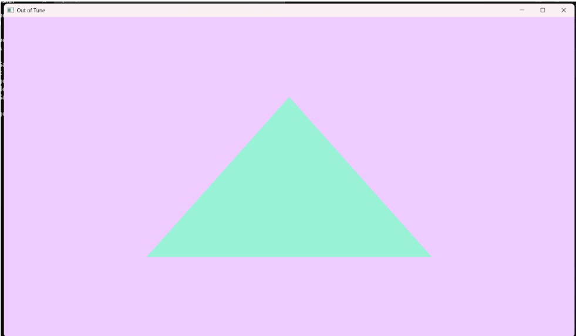

Out of Tune: Weekly Progress Report Week 3 4/15
Group Status
As a group, we have flushed out a majority of the vision/theme casting of our game. We have a solid idea of our initial 3 minigame ideas and the concept art and design of each of them. We have planned out our general file structure and a basic idea of how different game components will work together (interactables, rooms, players, etc.). Additionally, in the more technical side, we have set up our GitHub environment and have implemented isolated and basic implementations of 2D graphics, server/client networking and communication, and physics dynamics.
Screenshots
Group Morale
Overall, the consensus is that we are excited to work together but starting to realize how much work building everything will be. As a group we have a great dynamic, and we have not faced any internal conflicts so far. It should be a great quarter!
Individual Reports
Art (Jasmine):
What were your contrete goals for the week?
This week my main goal was to make concept art through mood boards and sketches to establish the theme for the setting and characters.
What goals were you able to accomplish?
I was able to finish this, I do feel like I could make more specific sketches now that we know what aesthetic we have decided to go with, so I might do that to help me with planning my modeling. I’m satisfied and glad we were able to make decisions about the art as a group fairly quickly, making it clearer what direction I am going with the art.
If the week went differently than you had planned, what were the reasons? note that this happens regularly…I would prefer you to be aggressive in what you want to try accomplish rather than limit yourself to goals you know you’ll easily achieve. so answering this question is more of a reflection on the development process and the surprises you encounter, it’s not at all an evaluation.
I think I could’ve pushed myself to complete more work this week overall. I had planned to only work on concept art this week but it was difficult since I didn’t have access to the drawing software I would usually use, so I relied on mood boards and simple sketches to portray my ideas, which took less time, but I kind of wish I took more time to sketch out specific ideas for myself. I might do that more this week as I begin modeling. I decided to start modeling a little ahead of schedule and it ended up taking longer and more effort than anticipated, therefore I want to push myself to spend more time on my work for this class and avoid procrastination. I also noticed since most of the deadlines are self imposed, it's really up to me to hold myself accountable to get my work done. Overall, I think I am satisfied with the work I did complete, but looking at the bigger picture, I want to get more done weekly since it looks like I will have a lot of work to do.
What are your specific goals for the next week?
Next week, I want to finish basic models of the lobby and hotel rooms and start modeling the swamp room. I should also figure out the overall color palette for the rooms and make more sketches of what other details I want to add later like furniture so that my team knows what other details I will go back and add to the rooms later, so they can give me feedback before I work on those smaller pieces.
What did you learn this week, if anything (and did you expect to learn it)?
This week I learned that a lot of the art process is doing research and figuring out how I want to add details to the room. For example, I was looking at a lot of pictures of hotel lobbies to try and narrow down what is similar between all of them and get a general idea of how I should layout my room to give it a hotel lobby feeling but still keep our scary vibe. I also looked at a lot of pictures of door frames because I wanted to add more details into my rooms, and it was at this point I realized I should make basic layouts first then spend more time on these small details later.
What is your individual morale (which might be different from the overall group morale)?
My individual morale is both really excited for our game and for the work I will get to do, but also a little stressed because I’m realizing how much work I’m going to have to complete and also because this work is very different than other work I’m used to and I have to make a lot of creative decisions and I’m scared of spending a lot of effort and doing something wrong. I was definitely way more excited at the beginning of the week when we were talking and making decisions as a group.
Music (Annie):
What were your contrete goals for the week?
My goal this week is to draft music tracks and working with Jasmine on drawing accurate music assets
What goals were you able to accomplish?
I found resources where I can use an external library to implement audio into the game. I’m planning to use FMOD for this.
If the week went differently than you had planned, what were the reasons? note that this happens regularly…I would prefer you to be aggressive in what you want to try accomplish rather than limit yourself to goals you know you’ll easily achieve. so answering this question is more of a reflection on the development process and the surprises you encounter, it’s not at all an evaluation.
Even though I did found tutorials of how to implement audio into a custom game engine, I will need to wait for the others to implement in objects and interactions before I get to test audio.
What are your specific goals for the next week?
To work more with Jasmine and create weird/scary sounds.
What did you learn this week, if anything (and did you expect to learn it)?
I learn how to theoretically use FMOD API to create a basic audio engine.
What is your individual morale (which might be different from the overall group morale)?
I’m quite excited for how this project turns out because this gives me an opportunity to create unique and experimental sounds.
Graphics (Gabriel):
What were your contrete goals for the week?
My concrete goals for the week was to get a world rendered: a floor, a skybox and a cube.
What goals were you able to accomplish?
With help from my groupmates, I managed to get the needed graphic dependencies to work with our project. Additionally, I got the rendering to work. I can now pass down vertex buffers to the graphics engine and it will draw corresponding shapes on screen.
If the week went differently than you had planned, what were the reasons? note that this happens regularly…I would prefer you to be aggressive in what you want to try accomplish rather than limit yourself to goals you know you’ll easily achieve. so answering this question is more of a reflection on the development process and the surprises you encounter, it’s not at all an evaluation.
I underestimated how long it would take to get the dependencies working. I spend a substantial amount of time trying to figure out how to link GLAD with a CMakeFile. Even though the rendering is fully functional now, I couldn’t accomplish my goal of rendering a world space and a cube because I didn’t account for the time I needed to get “non-rendering stuff” working before I got to the actual graphics engine coding.
What are your specific goals for the next week?
My goal is to add shaders to the graphics engine and get a floor with a cube to render on screen. When that’s done, I plan on abstracting drawing functions so that groupmates who aren’t working with graphics may easily specify the engine to draw whatever objects they need for testing.
What did you learn this week, if anything (and did you expect to learn it)?
I have been taking notes on the many functions from OpenGL, GLFW and GLAD that I’m including in the project in order to understand the abstractions I’m using. This forced me to learn about the rendering pipeline in a practical way, especially buffer objects. I can’t say I fully understand everything that’s going on, but I also learned that this is part of creating a game engine. There’s a lot that goes into rendering a single triangle that I wasn’t aware of, and I feel more informed about not only graphics, but game engines as a whole now.
What is your individual morale (which might be different from the overall group morale)?
I’m very excited about implementing the underlying graphics for our game, but it’s starting to dawn on me how much work goes into creating a graphics engine and I don’t think I have enough time to go in-depth in a lot of these topics. The quickest tutorial series I could find spent 3 videos (40 minutes each) just to render a single triangle, and it glanced over some details that I feel might be important to genuinely understand what the engine is doing.
General Game Implementation and Mini Games (William):
What were your contrete goals for the week?
Aim for this week was to learn about how games are structured, decide on mini games to implement, and begin implementing basic classes for our game.
What goals were you able to accomplish?
Learned a bit more about how games are programmed, i.e. tree like structure with everything extending from the main game node. We have decided on 3 different mini games, jumping across lilypads, redlight greenlight via clowns, and piano key team game. We decided on the design for our object classes, and began implementing them. Also additionally set up a github workflow file to make sure our code compiles when making changes to our repo.
If the week went differently than you had planned, what were the reasons? note that this happens regularly…I would prefer you to be aggressive in what you want to try accomplish rather than limit yourself to goals you know you’ll easily achieve. so answering this question is more of a reflection on the development process and the surprises you encounter, it’s not at all an evaluation.
I believe I could’ve done more with implementing our classes, i.e. finish the .h files and move onto the .cpp files. Also still not 100% with understanding how games actually work. Hopefully this clears up as I work on this project more.
What are your specific goals for the next week?
Continue working on implementing our classes. We also have an API to build if we get our server and client up and running. In the following week, I’d like for us to be able to see the essentials put together and functioning, i.e. rooms, at least one player, hallway, and movement within this environment.
What did you learn this week, if anything (and did you expect to learn it)?
Had to do a refresher on C++. See how classes, inheritance, syntax, etc. worked and how these are relevant to building a game. Also learned a lot about what goes into a game and how a game is designed just from looking at my teammates' progress.
What is your individual morale (which might be different from the overall group morale)?
Still super confused and a little worried on how we are going to put everything together, graphics, physics, mini games, object classes, overall game, art, music. But that's ok, I still have a lot to learn and I am happy with the vision for our project, also super excited to see this game completed! + My teammates seem to be veteran game developers.
General Game Implementation and Mini Games (Ravi):
What were your contrete goals for the week?
My concrete goals for the week were to get my coding environment setup, decide on the three minigames, plan out the basic structure of how files and classes should be laid out, and help get a basic file started for each of the classes that we decided on.
What goals were you able to accomplish?
I was able to accomplish the decision on the 3 minigames and the file structure. I was also able to start on the class files, but I have been running into issues with my C++ `include` settings setup and switching git profiles in the VS Code terminal. In the meantime, I was still able to share my code, but I will be working on finishing setting up my coding environment ASAP.
If the week went differently than you had planned, what were the reasons? note that this happens regularly…I would prefer you to be aggressive in what you want to try accomplish rather than limit yourself to goals you know you’ll easily achieve. so answering this question is more of a reflection on the development process and the surprises you encounter, it’s not at all an evaluation.
Overall the week went well, but I would have liked to do a bit more work with flushing out the internal contents of the class files, as well as finish setting up my coding environment. However, I am not disappointed with what got done, and I think the planning we did will let the game development work smoothly soon.
What are your specific goals for the next week?
My goals for next week are to implement the game timer, start implementing the hallway and room mechanics (doors, interactables, etc.) and how things work together, and implement the key mechanism for mingame doors and hopefully the final door.
What did you learn this week, if anything (and did you expect to learn it)?
I learned about C++ classes, inheritance, and other basic OOP syntax. I also learned about the differences in c++ compilers and where to store `include` information.
What is your individual morale (which might be different from the overall group morale)?
I am somewhat worried about the workload that this game will have but overall I am optimistic about how the term will go, and I am excited to work with an enthusiastic team.
Physics (Brandon):
What were your contrete goals for the week?
My concrete goals for the week was to get some general and isolated implementation of physics working, as well as player movement.
What goals were you able to accomplish?
I was able to get the general implementation of physics and movement, including WASD and jumping. Additionally, I have an idea of how I want to implement collision detection and response.
If the week went differently than you had planned, what were the reasons? note that this happens regularly…I would prefer you to be aggressive in what you want to try accomplish rather than limit yourself to goals you know you’ll easily achieve. so answering this question is more of a reflection on the development process and the surprises you encounter, it’s not at all an evaluation.
I had intended to get collision detection and response mostly done but untested since I had the free time to do so, but researching how to implement raw collision detection and response was more time consuming than I had thought. I was also dealing with a migraine for the entirety of last week, so I took time to rest.
What are your specific goals for the next week?
My specific goals for the next week are to implement collision detection and response, test/adjust the physics, and integrate the physics with the other components, such as graphics and networking. I intend to implement capsule and plane colliders at the current moment since we will at minimum have players and rooms. If time allows, I would want to implement rectangular prism colliders for simple objects and AABB collision detection optimization to prevent unnecessary collision detection.
What did you learn this week, if anything (and did you expect to learn it)?
I learned that there are so many ways to approach a physics engine, and it can get complicated. Physics engines mainly compromise on "good enough" because the computational complexity of checking collisions with absolutely everything is expensive. I honestly thought it was going to be quick with how fast the dynamics went, but collision is a different beast. I was mostly stuck on how to best implement a simple collision detection and response as well as how to organize/articulate it in code.
What is your individual morale (which might be different from the overall group morale)?
I am feeling a bit worried. I feel like we are already slowly slipping behind the schedule we set, including myself. I think we just need to orient ourselves and we can get on schedule and even ahead.
General Game Implementation and Mini Games (Helen Lin):
What were your contrete goals for the week?
My concrete goals for the week were to help out with graphics but focusing with the the general game implementation and mini game group of people and have the initial structure of the game set up and the mini games decided with the details of the mini game and how its played written up so we do not have as much confusions as to the game play of the minigame when implementing
What goals were you able to accomplish?
Since the focus of this week was more on the general game and mini game side and since the initial structure of setting up the graphics engine was harder to collaborate on, I didn’t end up helping out with the graphics. However, as for the general game side, Ravi, William and I met together outside of the big group meeting and communicated on discord and settled on the mini games we want in the game as well as the specification of what the game play consist of. We also decided on general structures as well as the classes that we think we’ll need on the game. However, I was planning to write up the doc containing the specification of the mini game but was only able to get through the majority of 1 mini game and yet to write up the other two. And also helped push Ravi’s initial class structure up to the github branch since he was having problems with it but was unable to find the time to help out earlier.
If the week went differently than you had planned, what were the reasons? note that this happens regularly…I would prefer you to be aggressive in what you want to try accomplish rather than limit yourself to goals you know you’ll easily achieve. so answering this question is more of a reflection on the development process and the surprises you encounter, it’s not at all an evaluation.
The week group meeting wise and decision making went pretty well but I feel like I was lacking on my side. Things came up during the weekend which was when I was focusing on getting the work done so I wasn’t able to spend much of the time working on the project. Though I still tried my best to stay within communications.
What are your specific goals for the next week?
My goals for the next week is to ideally at least before the meeting tomorrow (4/15) finish up at least 1 but ideally all 3 of the mini game specs. Then focus on finishing up the initial classes that we started setting up this week and work on getting the communications set up for the first mini game ready between the client and the server to send and receive updates on the game states for the mini game. Though this would need coordination with the networking to see where they are at with things.
What did you learn this week, if anything (and did you expect to learn it)?
I learned more about game design in general, realizing as I wrote up the spec that though we had an idea of what the mini game would be like, there were a lot of details that were missing. Using one of our mini games as an example, the one where the user moves a certain way depending on what another player hears. There were a lot more specifics as to how we plan to have the other player listen to and if there are any triggers such as when to play the music etc. Lots of game play specifics that I didn’t think about before hand that when starting working now realizing there is a lot more details more than we think about a game that needs to be decided on
What is your individual morale (which might be different from the overall group morale)?
I feel like at least for myself this current week the amount of work that I put in I wasn’t quite satisfactory. I think I was thinking about more actual coding being done but more logistical stuff and details were settled. I am a bit worried about the game. One with workload though I do believe that as the weeks go on we are able to do more work and probably work faster but it very much feels like there is so much to do but I can’t really find the right place to start.
Graphics & Network (Julie):
What were your contrete goals for the week?
My main goals for the week were to get basic keyboard support working in the graphics system and to connect the client and server so that when one client moves, the other clients can see the updated position. I also wanted to create a proper CMake setup that links all the necessary dependencies, especially GLFW, GLAD, GLM, and Boost.
What goals were you able to accomplish?
I got the CMake file working and linked GLFW, GLAD, and GLM. I organized the dependencies into subfolders and made sure everything builds properly. The CMake setup is cross-platform, so it works on both macOS and Windows, which makes it easier for everyone on the team to build and run the project. I also set up the basic server/client connection and got communication working, but I haven’t pushed it yet since it’s not integrated with the graphics side.
If the week went differently than you had planned, what were the reasons? note that this happens regularly…I would prefer you to be aggressive in what you want to try accomplish rather than limit yourself to goals you know you’ll easily achieve. so answering this question is more of a reflection on the development process and the surprises you encounter, it’s not at all an evaluation.
This week definitely didn’t go as planned, and I feel bad about not making more progress. I had an internship interview on Wednesday, so I had to spend some time preparing for it (but I got the internship, so that was exciting!). Then on Friday, which was also my birthday, I fainted during my party, probably because everything added up and I have low blood pressure. I ended up being sick over the weekend, which was really frustrating because I had planned to use that time to make progress on the project. I’m not listing these as excuses, but just to explain that this week was very unusual for me, and not how I normally manage my time or workload.
What are your specific goals for the next week?
Next week, I want to go back and properly add Boost. I originally set up CMake to download the entire library during the build process, but I realized it was too large and unnecessary for what we need. So now I’m planning to include only the specific components required. (I changed my mind, I’ll download the whole Boost library.) I also want to finish implementing the client-server communication and connect it with the graphics, so that player movement can be shared and visible across all clients.
What did you learn this week, if anything (and did you expect to learn it)?
One thing I learned is that being sick totally throws off productivity, even when I had blocked out time to get things done. On the technical side, I found out that GLM can just be added directly to the project because it’s a header-only library, which made things easier.
What is your individual morale (which might be different from the overall group morale)?
I’m genuinely excited about working on this project. After meeting with my teammates in person during last Thursday’s lecture, I felt even more motivated–everyone was so supportive and driven, and it made me want to contribute even more. I really appreciate the positive energy in the group and want to do my best alongside them.